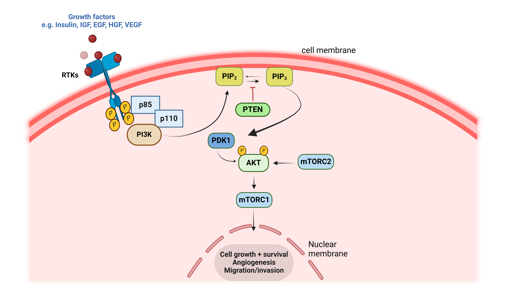

PI3K-Akt-mTOR signaling pathway
| Pathway Name: PI3K-Akt-mTOR signaling pathway - Homo sapiens (human) |
| Pathway Source: KEGG Pathway |
| Genes involved in PI3K-Akt-mTOR signaling pathway: ---- |
- 
The phosphatidylinositol 3' -kinase(PI3K)-Akt signaling pathway is activated by many types of cellular stimuli or toxic insults and regulates fundamental cellular functions such as transcription, translation, proliferation, growth, and survival. A ligand-engaged RTK binds PI3K either directly or indirectly, removing the inhibitory action of its p85 subunit on the catalytic p110 subunit. In physiological conditions, growth factors stimulate PI3K, which subsequently phosphorylates the phospholipid substrate PIP2 to generate the second messenger PIP3. PIP3 recruits and activates several functional targets, such as AKT isoform, PDK1, and others. The lipid phosphatase PTEN converts PIP3 to PIP2, which terminates accentuation of the growth signal to maintain normal cellular and tissue homeostasis. RTKs, receptor tyrosine kinases; IGF, insulin-like growth factors; EGF, epidermal growth factor; HGF, hepatocyte growth factor; VEGF, vascular endothelial growth factor; PTEN, phosphatase and tensin homolog; PI3K, phosphoinositide 3-kinase; PIP2, phosphatidylinositol 4,5-bisphosphate; PIP3, phosphatidylinositol 3,4,5-trisphosphate; PDK1, phosphoinositide-dependent kinase-1; AKT, protein kinase B; mTORC1, mammalian target of rapamycin complex 1. The figure was created with BioRender.com (accessed on 30 May 2024) and was exported under a paid subscription.